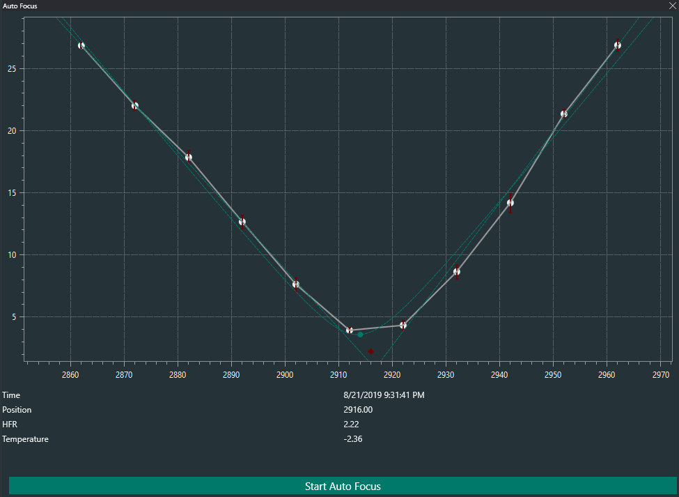
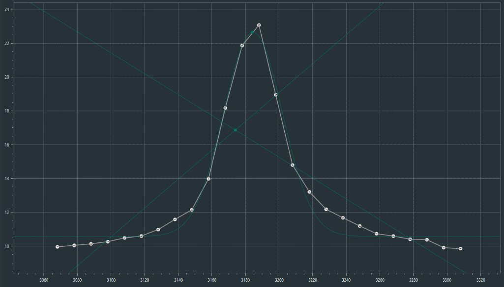
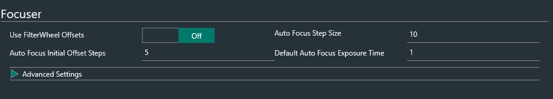
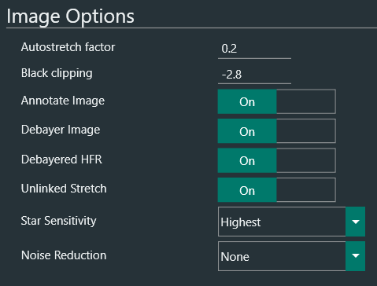
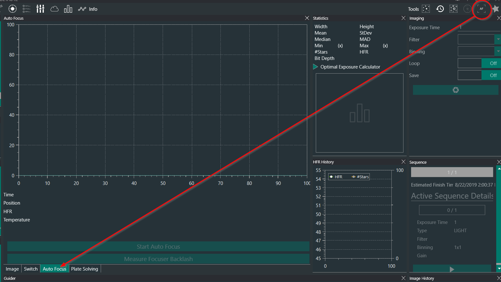
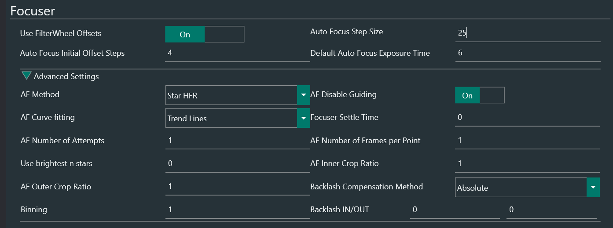
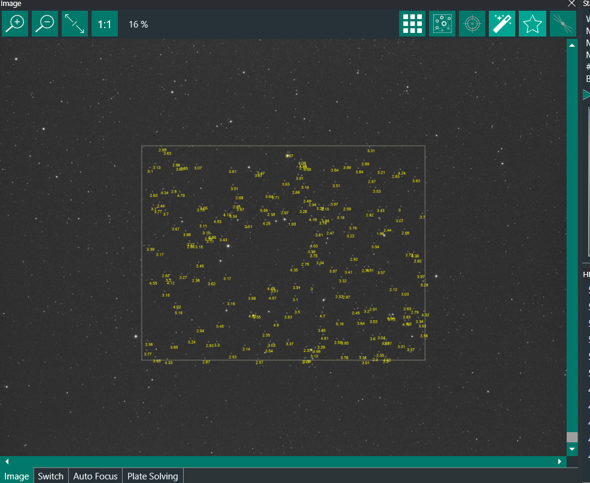
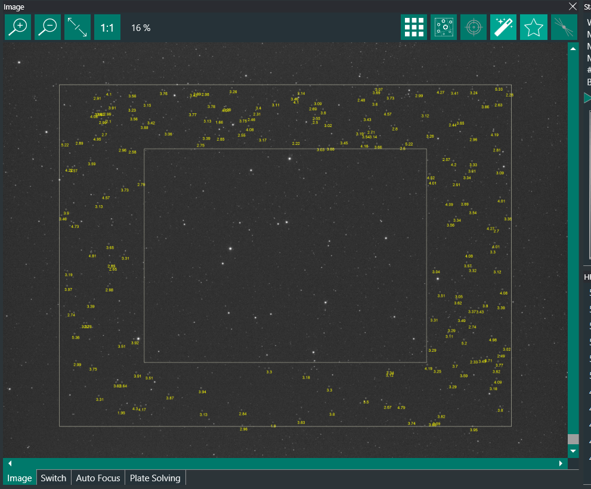
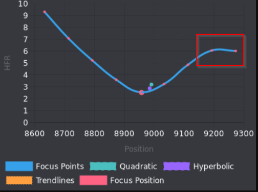
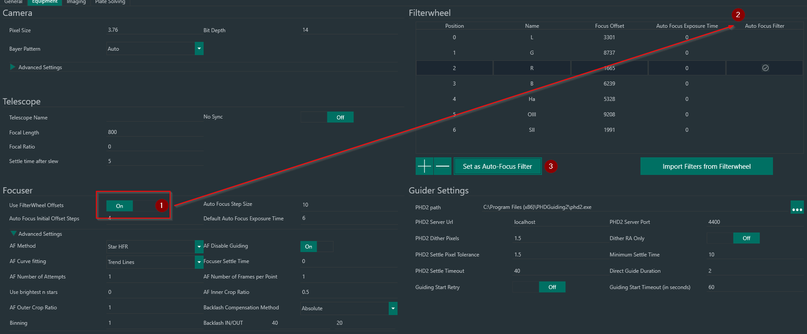

Auto-Focus
Overview#
Proper focusing is a critical part of astro-imaging. Poor focus will yield softer images and lower SNR. As such it is common for imagers to focus with precision tools such as a Bahtinov mask prior to imaging. However, most optical assemblies will suffer from focus shift throughout the night whether it be because of temperature shift or other causes. Additionally, the popularity of monochrome sensors used together with narrowband or broadband filters has led to the need to refocus between filters, due to the slight focus shifts introduced. There is therefore a need for automated focusing procedures which can run at the beginning of a sequence, but also throughout the night.
Requirements#
For Auto-Focus to be available for use in N.I.N.A. the following must be available and connected via the Equipment tab:
- An ASCOM compatible autofocuser with absolute positioning, properly set up to make sure it has minimal backlash and minimal slippage.
- A camera that is using the imaging train to which the autofocuser is connected.
N.I.N.A. Autofocus#
N.I.N.A. is unique in that provides multiple ways to autofocus on star fields, on bright objects such as the moon or planets, or on terrestrial objects. This is done using two methods to measure how far from focus an image is.
Star HFR#
With this method, N.I.N.A. will move far out of focus, take an exposure, detect the stars in the image, compute the Half Flux Radius (HFR) of the stars and take the average HFR across the frame. Then, moving the focuser by some defined amount (the Auto Focus Step Size), N.I.N.A. can repeat the process, until a nice focus curve is available, and the minimum (point of best focus) can be found by different types of fitting (trend lines, hyperbolic, or parabolic). The obtained curve is as the below.

Each of the focus points above represents the HFR at its respective focus position. In addition, the red bars on each point represent the potential error on each of the focus points - wind and other factors can cause this error to be large. The line and curve fitting used to find best focus make use of those errors to take into account points with smaller error more than points with bigger error. The routine is therefore resistant to noise and other factors such as wind.
Note however that for Star HFR measurement to work, stars must be detected in the field of view - as such, the routine will have issues with short exposures and far from focus, where out of focus stars will tend to be very large. The Auto-Focus Exposure time is therefore an important parameter to the autofocus routine.
It is also important to note that if the N.I.N.A Step Size were too big (in the above example we can see it is equal to 10 focuser steps), the curve could become too coarse to be analyzed. The N.I.N.A Step Size therefore needs to be selected judiciously.
Contrast Detection#
A second method is to detect the contrast available in the image - in the same way that a smartphone or mirrorless camera does to perform autofocus. The focuser is moved per the Auto Focus Step Size, exposures are taken per the Auto-Focus exposure time, and contrast is measured via different techniques. The curve obtained is close to a Gaussian Curve, where the maximum of the curve is the point of highest contrast and therefore best focus. An example would be as per the below.

As is visible on the image, N.I.N.A. fits a Gaussian Curve to the focus points to find the maximum, the point of best contrast. Because this method doesn't rely on detecting stars, it can use very short exposures, and use up very little computing time - this makes it good for very quick focus. Note however that the peak can be quite narrow and would be easy to miss entirely - as such the Auto Focus Step Size would need to be narrower than with the Star HFR technique. Getting more points near best focus is also recommended. Since this method uses contrast detection, it will also work on the Moon, solar system objects, or terrestrial objects. However it can be more sensitive to adverse conditions than the Star HFR method, and is still currently experimental.
Please note that both methods above assume that the focus is reasonably near to best focus at the start - please make sure that stars are decently small before launching the routine.
Basic Settings#
The main settings for autofocus are under Options -> Equipment -> Focuser section.

As we have seen above, the two main parameters to successful auto-focus are here:
- Default Auto Focus Exposure Time (in seconds)
- Auto Focus Step Size (in focuser steps)
Some additional parameters are available:
- Auto Focus Initial Offset Steps (in N.I.N.A. Auto Focus Steps Sizes, and not focuser steps)
- Use FilterWheel Offsets (which does not directly affect auto-focus)
Note
The Default Auto Focus Exposure Time won't be used if a filter wheel is connected, and Auto Focus Exposure Times have been set up in the Filter wheel section of the Options -> Equipment view. Instead, the per-filter exposure times will be used depending on the filter set at the time. This can be very convenient for imagers doing both broadband and narrowband (such as HaRGB). More details on how to set this up are available in the Equipment Options Section.
Auto-Focus algorithm#
The autofocus logic is as follows:
- For Star HFR, N.I.N.A. takes an exposure at current focuser position, and computes the Star HFR. This will be the "benchmark to beat", and the final focus point will be checked against this benchmark to ensure better focus has been achieved.
- Move the focuser outwards (to a higher focuser position value than current) by Auto Focus Initial Offset Steps multiplied by Auto Focus Step Size. In the above example, the focuser would be moved by 5 * 10 = 50 focuser steps to the right.
- Start moving the focuser inwards (to lower focuser position values), one Auto Focus Step Size (e.g. 10 focuser steps in the above example) at a time, measuring the contrast or HFR at each step.
- Keep moving inwards until it has found a minimum (for HFR) or maximum (for Contrast) point, and at least Auto Focus Initial Offset Steps (5 in this example) points on each side of that minimum or maximum. If N.I.N.A. finds that it doesn't have enough focus points to the right of the minimum/maximum, it will move back outwards to the rightmost point, then proceed again, one Auto Focus Step Size at a time, until it has enough points right of the minimum/maximum as well
- Perform a fitting on the points (trend lines, parabolic, hyperbolic, or Gaussian) to find the point of best focus, and moves the focuser to it.
- For Star HFR, a final validation exposure is taken, the HFR computed, and compared to the benchmark taken in Step 1. If the final HFR is worse than the initial HFR by 15% or more, the autofocus routine is deemed a failure and the focuser returns to its initial focus position, or an additional auto-focus run is attempted.
Determining ideal parameters#
As we have seen, there are three important parameters that are used in the autofocus algorithm. It is time to set them up properly - a rule of thumb is as below.
Auto Focus Initial Offset Steps#
This is typically good at the default value of 4 for Star HFR. For contrast measurement, a value of 6 is preferable.
Auto Focus Step Size#
To determine the correct Auto Focus Step Size, a user could start with the focuser slightly out of focus outwards from best focus. Then move the focuser outwards by say 10 steps. If there an obvious difference to the eye, and the star diameter has increased by around 20-30% or so, this is likely a right step size. Another method is the following: starting from a good focus position (e.g. by focusing with a Bahtinov mask) the user can progressively move the focuser inward (or outward) until N.I.N.A. is not able to determine stars HFR in the image. The total increment represents the maximum initial offset. To be on the safe side the user can take 80% of the max initial offset and divide it by the Auto Focus Initial Offset Steps (default = 4). The resulting value represents a good Auto Focus Step size. Star HFR detection and Annotate Image must be turned ON during the process.
Example: assuming a starting point of good focus of 4000 steps, we will move the focuser outward by an amount of 10 steps at the time, and take a new exposure at the end of each increment to check the measured HFR. Let's say that after 12 moves (120 focuser steps) no or just a couple of very defocused stars will still be detected by N.I.N.A. The value of 120 steps will therefore represent be the max increment. Scaling it by 80% (roughly 100) and dividing it by the Initial Offset (4) will give us an Auto Focus Step Size of 25.
Otherwise, the user should keep experimenting until they find a step size that shifts the focus by the right amount.
The above Step Size (in focuser steps) will be correct for Star HFR measurement. For contrast measurement based on Sobel or Laplace methods, this should also work fine. For Statistics-based contrast measurement, it may be appropriate to divide the Step Size by 2 or 3 and use that (as we saw in the previous example, the peak in that case is quite narrow).
Default Auto Focus Exposure Time#
Under Options -> Imaging -> Image Options, set the "Annotate Image" parameter to On.
For your filter of interest, take an exposure near best focus on an area with many stars. An ideal exposure time for Star HFR would be an exposure that almost saturates the brightest stars, but keeps the majority under the saturation threshold. The stars should be easily visible and identifiable to you. Now enable the Star icon (HFR measurement) on the Image pane of the Imaging tab - N.I.N.A. will highlight the detected stars. If many stars are detected, this exposure time is likely fine.
Then, move the focuser out of focus, by the Auto Focus Initial Offset Steps multiplied by Auto Focus Step Size. Take a frame with the same exposure time, and check that some of the out of focus shapes are still quite bright, with some very obvious borders. Again, using the Star icon, have N.I.N.A. highlight the detected stars - are some of the brightest stars correctly detected? If so, you have the right exposure time.
If both of the above are OK, you have found the correct default auto-focus exposure time for Star HFR. Note that this can change depending on your Imaging Auto-Stretch Settings. If you find that you have problems detecting stars far out of focus, you may want to increase the exposure time, and potentially decrease your Auto Stretch Factor.
Note that for contrast detection methods, it is generally safe to use an exposure time that is shorter than the one used for Star HFR.
Use FilterWheel Offsets#
Even par focal filters can cause small changes to focus, due to the filter itself, or the optical system and how it deals with different light wavelengths. As such it is possible to set offsets, in focuser steps, for each filter relative to one another. If a filter wheel is used, and offsets are properly defined per filter, this setting should be turned on. Otherwise, it should be kept off. This setting doesn't affect autofocus directly, unless an Auto-Focus filter is set. Defining filter offsets is further explained in the Equipment Options Section.
Important considerations#
The basic parameters above should provide good auto-focus. The star HFR measurement and contrast detection calculation are however affected by other settings, which are located under Options -> Imaging -> Image Options

Autostretch factor and Black point clipping#
These settings are used for stretching images automatically so that the target features are visible by human eyes. The stretch factor determines how bright the image becomes (the higher the brighter), and the black clipping determines whether some of the background should be clipped to black, increasing contrast.
Some of the routines used by autofocus use the stretched images as well (for edge detection for example), and are thus affected by this setting. This includes:
- StarHFR routine: stars are detected based on the stretched image
- Contrast Detection routine, with the Sobel and Laplace measurement methods: contrast is measured on the stretched image
In light polluted conditions, if running into issues, it may be worth trying to lower the stretch ratio to values such as 0.1 and the clipping to values such as -2. This will depend on each observer's conditions however, and each user needs to find out their best settings using the techniques highlighted above.
Debayer Image, Debayered HFR and Unlinked Stretch#
The recommended (and default) value for these parameters is On.
The Debayer setting is for OSC (one shot color) cameras, and will be ignored for monochrome cameras. If enabled, the sensor data (which is monochrome at this stage) will be debayered into a color image and displayed as such in N.I.N.A. In addition, if Unlinked Stretch is set to On, when stretching the image each color channel will be stretched separately, according to its own statistics. This helps achieve images with higher contrast, so it is recommended to keep this On, unless the computer used for capture is very slow.
Since, just as described above, many autofocus measurement methods depend on the stretched image, having this parameter correctly set will help with autofocus. Generally, it is better to leave these set to On.
Similarly, the Debayered HFR option provides a better way to perform HFR calculation when set to On. If set to off, the Bayered sensor data will be used for Star HFR calculation, which can lead to small focus error.
Star Sensitivity#
Star sensitivity is a parameter that takes effect during Star Detection, and therefore affects the Star HFR autofocus methodology. More aggressive settings will typically detect more stars, but will become more sensitive to noise as a result, which could lead to miss detecting stars. With the Annotate Stars setting set to On it is possible for the user to see the effects of this setting both in and out of focus. Typically, a value of Normal or High will provide good results.
As making this parameter more aggressive increases noise sensitivity, it can be used efficiently with the Noise Reduction parameter described below.
Noise Reduction#
This parameter determines how noise reduction is applied on the image prior to star detection, or some of the methods of contrast detections (Sobel and Laplace). It is only effective on the following autofocus methods:
- StarHFR routine
- Contrast Detection routine, with the Sobel and Laplace measurement methods
The possible values are as below:
- None: no additional noise reduction is applied prior to star detection or contrast measurement
- Median: a 3x3 Median filter is applied on the full size image prior to star or contrast detection. This is extremely effective at getting rid of hot pixels (which could be recognized as stars), but adds some processing time
- Normal: A Gaussian smoothing is applied to the image prior to star or contrast detection. This is effective at reducing thermal noise. Processing time impact is minimum, but detectable.
- High: A stronger Gaussian smoothing is applied to the image
- Highest: An even stronger Gaussian smoothing is applied to the image
Noise reduction can be very effective when combined with star sensitivity settings - but which values are ideal depend on each user's setup. Good results have been found with Star Sensitivity Normal or High and Noise Reduction Normal.
Launching Auto-Focus#
Now that the basic settings of the autofocus routine have been set, it is time to launch an autofocus run. Of course, prior to doing that, the telescope should be pointed to the night sky, and tracking. There are multiple ways to do this:
- Start autofocus manually, from the Imaging tab. To make sure the autofocus window is available, the top right AF button needs to be clicked first. That should create a tab in the imaging pane.

If both camera and focuser are properly connected, the "Start Autofocus" button will be available, and clicking it will launch the routine, as described in the introduction section.
- Start autofocus as part of an imaging sequence (at start, after a certain number of frames, after a user-defined time, after worsening of HFR, etc.). This can be configured from the sequence tab, and is described in more details in the relevant Sequence Section
Advanced Options#
Under the Focuser options, there are a range of advanced options that will affect autofocus. The available options are different depending on the focus methodology being used. See Options->Equipment for further details.

AF Method#
The method used for autofocus. This is either Star HFR or Contrast Detection, both of which have been described in this document. Default is Star HFR.
AF Disable Guiding#
Determines whether guiding should be disabled when autofocusing. For OAG or belt focuser users, it may be better to have this option set to On. Otherwise, it can be set to Off.
AF Curve Fitting#
This option is only available when the Star HFR autofocus method is selected (for contrast detection, a Gaussian curve is always used). It determines what methodology should be used for fitting the focus points to a smooth curve.
- Trend Lines: this is the default option, and uses error-weighted trend lines for the left and right side of focus. The intersection of the trend lines is the point of best focus.
- Parabolic: an error-weighted parabolic fit will be done on the focus points, and its minimum determines the point of best focus. This is most appropriate for users whose autofocus step size and offset steps keep them in the vicinity of the CFZ (critical focus zone), so that the asymptotes of the focus curve are usually not reached.
- Hyperbolic: an error-weighted hyperbolic fit will be done on the focus points, and its minimum determines the point of best focus. This is appropriate for most users, for whom the focus curve will resemble a hyperbola, with clear asymptotes on each side of focus.
- Parabolic + Trends or Hyperbolic + Trends: This will fit the focus points with both trend lines and a parabolic or hyperbolic fitting. The point of best focus is then an average between the trend line intersection and the hyperbolic or parabolic minimum.
Note
Which fitting method works best depends on the user and their particular conditions. Poor seeing conditions in particular can make parabolic fitting very appropriate, while Hyperbolic fitting (or hyperbolic + trends) should work best for most users
Focuser Settle Time#
This is the time, in seconds, that will be waited for after a focuser movement, and before the next exposure. This can be useful for focusing systems that can make the imaging train vibrate, like some belt focusers. For most users, this can be kept at zero.
AF Number of attempts#
If a focus run is deemed unsuccessful (which can happen with the Star HFR methodology, which compares the final Star HFR to the initial Star HFR), if there are Auto Focus Attempts left, a new focus run will be attempted. When all the attempts are exhausted, the autofocus routine will declare failure, get back to its original focuser position, and imaging will continue as usual. For most users, a value of 1 (single attempt, no re-try in case of failure) or 2 (one reattempt in case of failure) is appropriate.
AF Number of Frames per point#
For users for whom extremely precise focus is critical (such as users in good seeing conditions and high resolution imaging trains), getting very accurate focus points and thus focus curve fitting is necessary. To accomplish that, the Auto Focus Routine can take multiple exposures (as per this parameter) per focuser position (rather than a single one) and average their Star HFR or contrast measurement - this leads to smoother, more precise focusing curves, at the cost of more time spent autofocusing. For most users, a value of 1 works well.
Use Brightest n Stars#
This setting, which is only available for the Star HFR focusing method, will detect the top n brightest stars in the FOV, and use only those stars during the whole auto-focusing sequence. As the positions of the stars can change in unstable imaging trains, or imaging trains subject to mirror shift, this should only be used for very stable imaging setups. For most users, a value of 0 (meaning all the detected stars in the FOV will be used) works best.
AF Inner Crop Ratio and AF Outer Crop Ratio#
These settings (numbers between 0.2 and 1) are used to define a region of interest for the autofocusing method. For Star HFR, this is how it works:
- If both ratios are set to 1, nothing is done, the whole frame is used for autofocus
- If Inner Crop Ratio is set to a value below one, such as 0.5, and Outer Crop Ratio is set to 1, a central ROI (Region of Interest - in this case corresponding to 50% of the full frame size) will be used for star detection. If the camera is able to subsample to that particular ROI, it will do so. Otherwise, the full frame will be captured, but only the stars within the ROI will be used. If Annotate Image is set to true, the effect of the setting will then be readily visible, as per the following screenshot.

- If Inner Crop Ratio and Outer Crop Ratio are both set to values less than 1 (note that the Outer Crop Ratio value cannot be smaller than the Inner Crop Ratio), a "doughnut" of sorts is created between the inner rectangle and the outer rectangle - this will be ROI for autofocus. This is good for some optical systems which are best focused at 2/3 of the field of view, like some Takahashi refractors. The result is as below (inner = 0.5 and outer = 0.8).

Note that it is possible to have the inner crop ratio to some value, and the outer crop ratio to a value such as 0.99 to take into account only the outside of the center - this can be useful for centered very dense globular clusters, although they should not pose a big issue to the N.I.N.A. star detection routines.
Note that for Contrast Detection methods, only the inner crop ratio is available. In addition, for the Statistics contrast detection method, it will only work if the camera can subsample to the required ROI.
Backlash#
Most focusers suffer from some degree of backlash, which is a certain amount of "slippage" when reversing directions. That backlash can be precisely measured and compensated in software. For most focusers, the IN (when the focuser switches back to an inwards direction after moving outwards) and OUT (when focuser switches back to an outwards direction after moving inwards) are identical.
Identifying backlash#
It is critical for autofocus that all backlash is removed during a focus run. Without it the final focus position will never be reached properly. Therefore the backlash needs to be identified.
An easy way to see this, is by looking at the Autofocus chart itself. The backlash will be prominent on the right side from the starting position and will show as a horizontal line in the chart.

In the above example the amount of backlash is at least 100 steps. Let's explain why the right side will show the backlash like that.
The initial focuser position for the above example was around step 9000. To begin the autofocus routine, the focuser will move outwards to position 9300. The first measurement is taken. Then the focuser needs to travel to position 9200. Here the direction is changed from outwards to inwards. Every time a change of direction happens, the backlash needs to be compensated. As there was no compensation for the above example, the focuser thinks that it moved to position 9200, but due to the backlash the physical movement of the draw tube was none. Therefore the next measurement point will have the same HFR value as before, resulting in a flat line until the backlash was overcome. Finally when the focuser was moving inwards to the last autofocus point at position 8600 it needs to change directions again to move to the calculated focus point. Here again the backlash was not compensated and the focus position will be missed, resulting in a bad end result.
Compensating backlash#
N.I.N.A. offers two backlash compensation methods:
- Absolute: When the focuser changes directions, an absolute value will be added to the focuser movement. Backlash IN: when the focuser changes from moving outwards to moving inwards the Backlash IN value will be added Backlash OUT: when the focuser changes from moving inwards to moving outwards the Backlash OUT value will be added
- Overshoot: This method will compensate for Backlash by overshooting the target position by a large amount and then moving the focuser back to the initially requested position. Due to this compensation the last movement of the focuser will always be in the same direction (either always inwards or always outwards)
Absolute is indicated for focusers with relatively small backlash and requires a more accurate measurement of the amount of backlash, while Overshoot is more forgiving and can be safely used for most focusers.
Backlash IN/OUT * The focuser backlash in the IN (decreasing position) and OUT (increasing position) directions, expressed in focuser steps.
When Overshoot is chosen, only ONE between Backlash IN and OUT must be set! When setting IN, the amount will be applied on each inward movement, so the final movement will always be outwards. For Backlash OUT, it will be the other way around
Binning#
Autofocus can sometimes work more efficiently on binned images. This is a number between 1 and 4, representing 1x1, 2x2, 3x3, and 4x4 binning. This will attempt to bin the camera image to that particular value. For most users, a value of 1 is appropriate.
Auto-Focus Filter#
Another parameter that affects the auto-focus routine is the Auto-Focus Filter. It is possible to set an auto-focus filter, as described in the Equipment Options Section. If set, and the Use FilterWheel Offsets setting is set to On, the autofocus routine will use the Auto-Focus filter rather than the currently set filter in the filter wheel, and make sure the focuser offset is applied when switching to the autofocus filter, and when switching back to the imaging filter. This can be particularly useful for Narrowband imagers, where the filters can force long exposures for autofocus, such as 10 to 30 seconds.

Auto-Focus Logs#
For each successful Auto-Focus that has been performed a JSON log file is created containing detailed information about the autofocus run. There you can find the used filter, all the steps that were measured and other useful information to evaluate an Auto-Focus run from the past. Furthermore these logs can help greatly in analysing potential issues with Auto-Focus by sharing this file with other people.
These logs are stored inside %LOCALAPPDATA%\NINA\Autofocus\